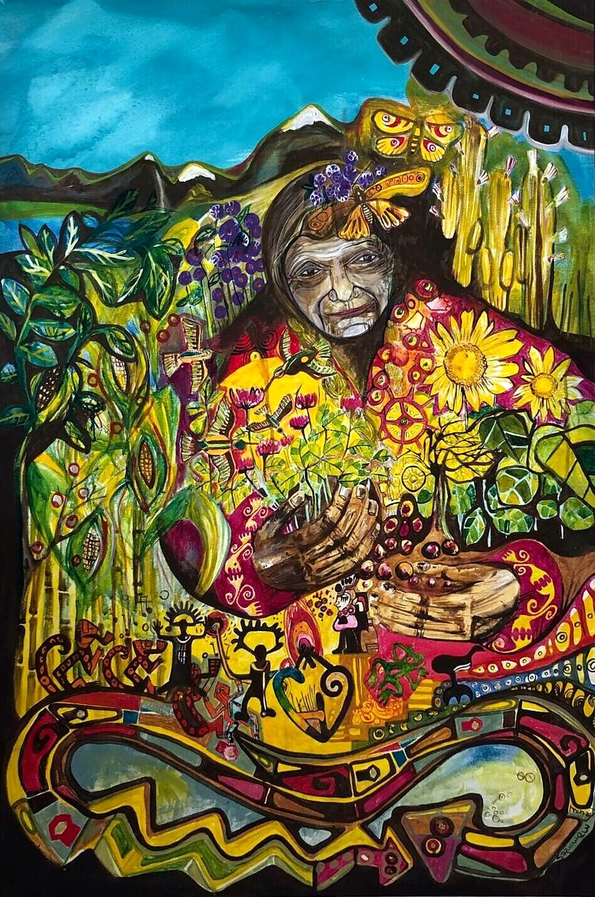
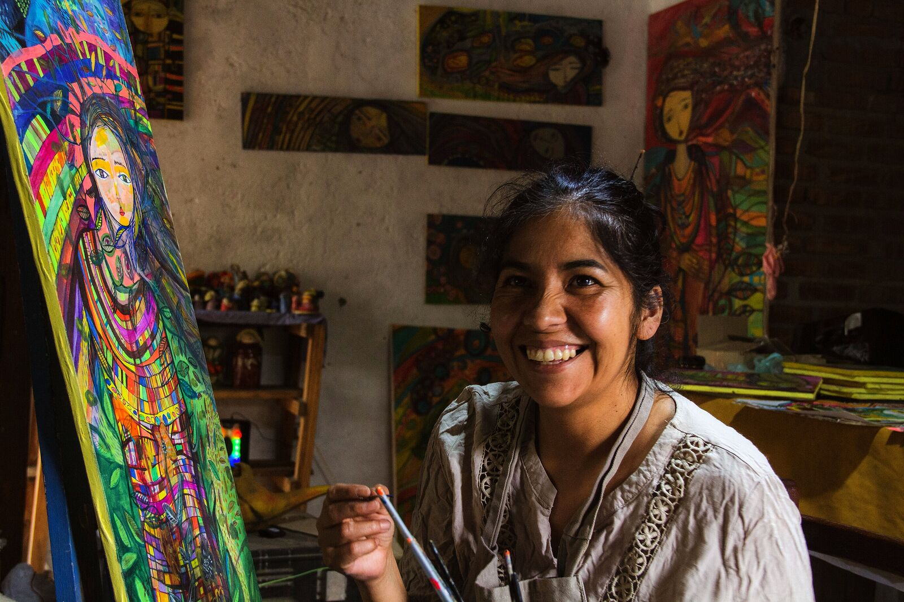
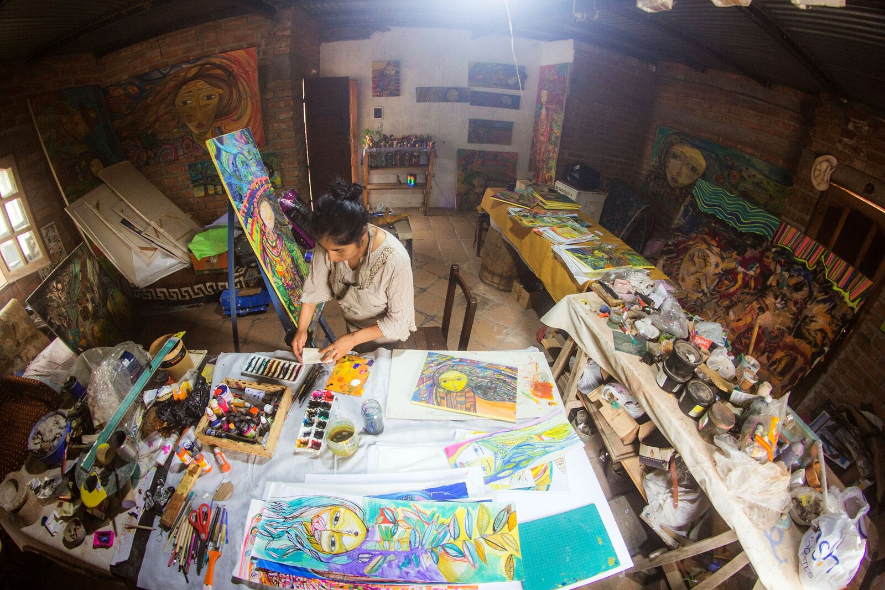

Valles Calchaquíes · Tucumán
Arte Munay
Cinthya Mamondes
Cerámica, pintura, grabado y arte textil.
La identidad andina, la espiritualidad de los cerros y la memoria del territorio calchaquí.

Obra
Muestras y talleres
Novedades, cursos y encuentros.
Muestras anteriores

Sobre Munay
Cinthya Mamondes —conocida artísticamente como Munay— es artista visual, ceramista, docente e investigadora, nacida en los Valles Calchaquíes (Tucumán, 1984). Su vida y su obra se entrelazan entre Amaicha del Valle y Tafí del Valle.
A través de Arte Munay, proyecto iniciado en 2007, desarrolla una producción interdisciplinaria que dialoga con la identidad andina, la espiritualidad de los cerros y la memoria ancestral del territorio calchaquí: cerámica, grabado, pintura, acuarela, dibujo, muralismo y arte textil —bordado y fieltro—, cada soporte entendido como un canal de conexión con la tierra.
“Munay” — en quechua, amar, querer.
“Me gusta aplicar fragmentos textiles, cerámicos y cortezas de plantas del lugar. […] Las texturas nacen de mi admiración a los textiles y cerámicas del mundo andino.”— Cinthya Mamondes
Alfarería
Su trabajo privilegia el rescate de los saberes originarios: construye sus piezas con técnicas ancestrales —pellizco, rollo y plancha—, con tratamientos de superficie tradicionales como engobes, esgrafiado, pulido y bruñido, y cocciones en horno a leña. Se destacan sus piezas escultóricas, sus vasijas silbadoras y series como APUS, homenaje a las montañas sagradas de la región.
Formación
Licenciada en Artes Plásticas con especialidad en Grabado (Facultad de Artes, UNT). Profesora en Artes y Técnica Ceramista (Escuela de Bellas Artes, UNT). Bajo la guía de la Lic. Alicia Peralta investiga la plasticidad y composición de las arcillas locales de los Valles Calchaquíes y técnicas de impresión autóctonas.
Docencia
- Desde 2006, docente de Educación Plástica en escuelas rurales y de alta montaña.
- Desde 2012, a cargo del C.E.F.P. N° 2/178 de Alfarería y Cerámica Artesanal, Tafí del Valle.
- Clases en el CEJA Tafí y el Anexo CEJA Amaicha.
- Disertante en Barro del Norte (2024).
- Mural cerámico colectivo con sus estudiantes en el Encuentro Latinoamericano de Ceramistas Barro Calchaquí (2026).

Contacto
Consultas por obra, encargos, cursos y talleres de cerámica.